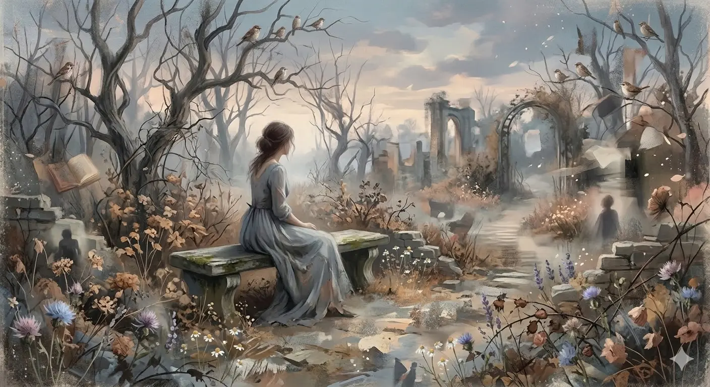

It's a digital illustration that attempts to capture the essence of nostalgia and melancholy. I want the image to convey a sense of a forgotten memory, something that exists on the border between reality and dreams.